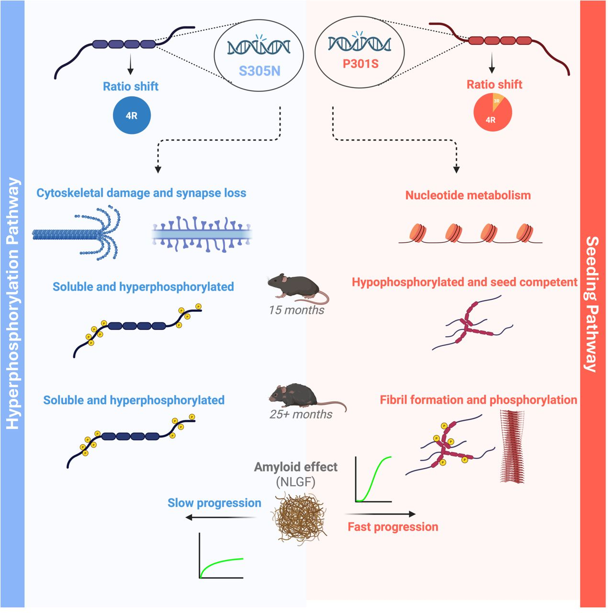
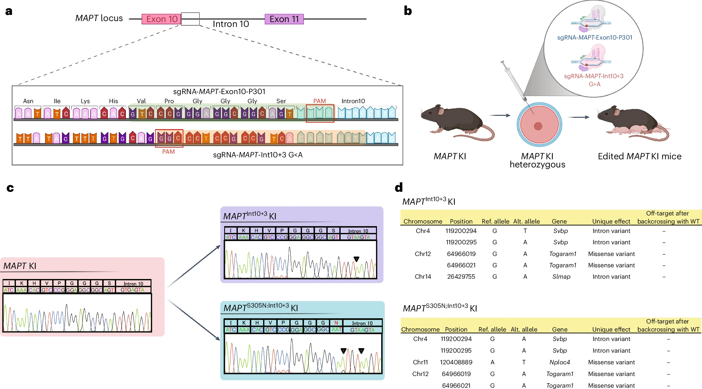
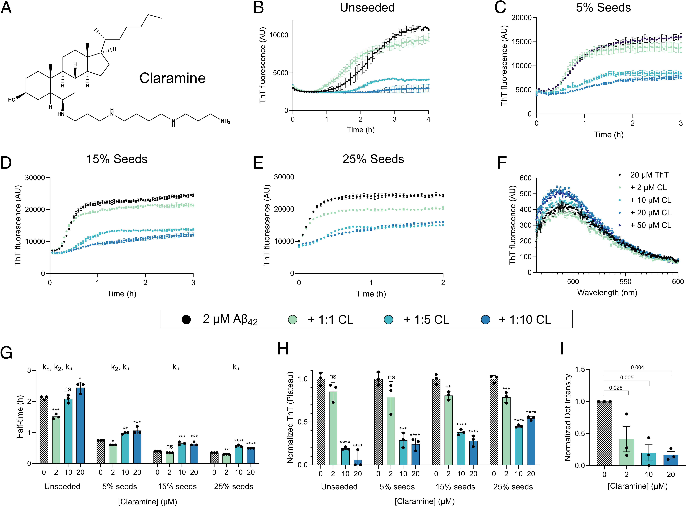
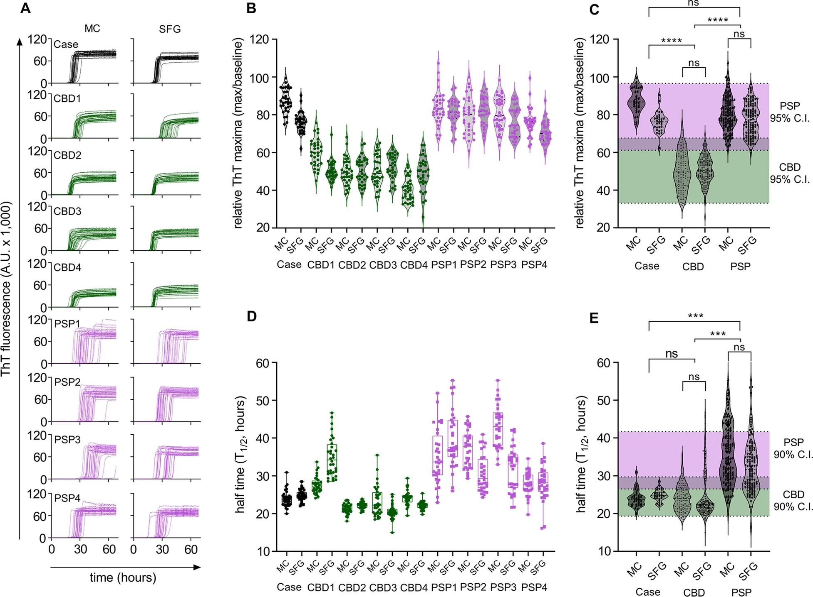
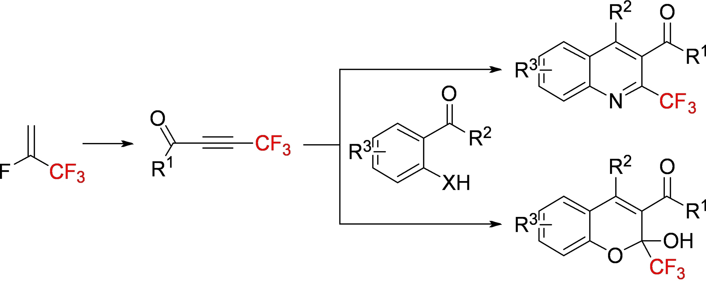

Research Projects

Alzheimer's & Dementia, 2026
Paper →

bioRxiv (preprint), 2026
Paper →


Journal of the American Chemical Society, 2025
Paper →


Proceedings of the National Academy of Sciences, 2025
Paper →

Acta Neuropathologica Communications, 2023
Paper →

European Journal of Organic Chemistry, 2023
Paper →